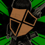

Rareza
★★★
Mundo
Mundo de la Asociación Liu
Temporada
Banner Normal
Lanzamiento
30 de febrero de 2025
Rasgos
FixerLiu Association
PV
243
Vel.
4~6
Def.
67
65% (158) - 35% (85) - 15% (37)
Corte
Perforación
Contundente
Ineficaz[x0.5]
Normal[x1]
Fatal[x2]
Mínima
-45
Máxima
45
Factores Base para incrementar la cordura
incrementa la cordura dependiendo del choque basado en el contador de choque (clash) Valor base es 10 incrementado en 20% por cada contador de clash despues de 1
Aumenta en 10 después de que esta unidad derrote a un enemigo cuyo nivel fuera igual o superior al de esta unidad.
Aumenta en 5 después de que un aliado derrote a un enemigo cuyo nivel fuera igual o superior al de la unidad.
niveles negativos proximamente...

 Corte de fuego
Corte de fuego
Peso de ataque: 67 (65+2) 
Cantidad: x3
[Efecto] Al golpear inflinge 3 de quemadura en el enemigo (maximo 2 veces por turno)
Por cada 10 de acumulacion de fuego en el rival, ganas 10% mas de daño
 Asalto Frontal
Asalto Frontal
Peso de ataque: 65 (65+0)
Cantidad: 2
Poder de moneda +1 por cada 6 de fuego en el enemigo (maximo 2)
(primera moneda)[Al ganar choque Win] inflinge 2 de fuego
(Segunda moneda)[Al ganar choque Win] inflinge 2 de fuego
[Al golpear] si el enemigo tiene mas de 6 de fuego, inflinge +2 de contador de fuego en el enemigo
 Flujo de la espada
Peso de ataque: 65 (65+0)
Flujo de la espada
Peso de ataque: 65 (65+0) 
Cantidad: 2
[Al terminar el ataque]cura 15 de cordura por cada con menor cordura a el.
[Al golpear con cualquiera de las 4 monedas] aplica 1 de fuego y aumenta el daño en +2% por cada fuego en el enemigo (max 60%)

EN GUARDIA!!
 67 (65+2)
67 (65+2)
Entrenamiento Agudo
× 4 Res
Al final del turno: Cura a 1 aliado con los SP más bajos una cantidad igual a (5 + valor de Resonancia más alto) (máx. 10) (excluye: a uno mismo y a aliados en estado de Pánico o Corrosión por E.G.O.)
Ojo observador
× 3 Res
Para 2 aliados con la menor cantidad de SP: si perdieron SP durante este turno, recuperan 5 SP al final del turno.